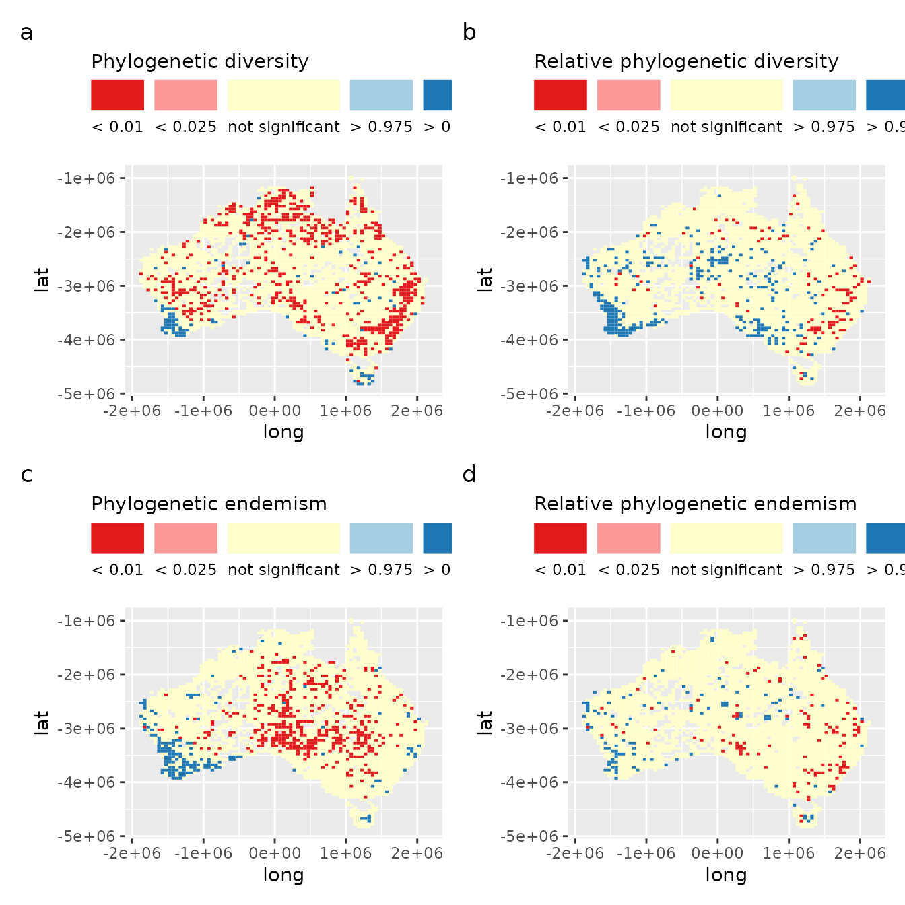
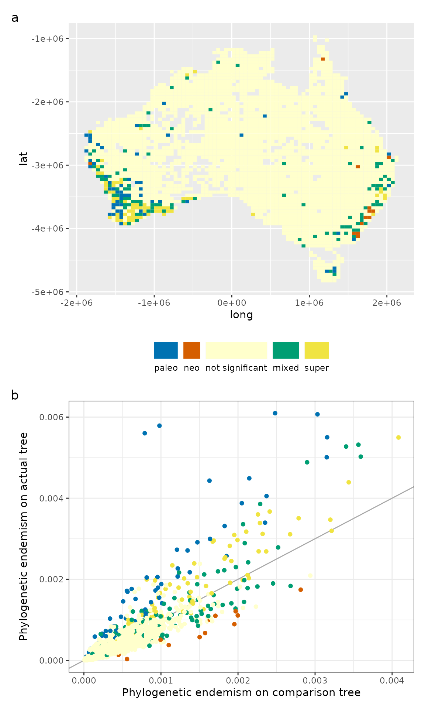

CANAPE stands for “Categorical Analysis of Neo- And Paleo-Endemism”, and provides insight into the evolutionary processes underlying endemism (Mishler et al. 2014). The idea is basically that endemic regions may be so because either they contain range-restricted parts of a phylogeny that have unusually long branch lengths (paleoendemism), or unusually short branch lengths (neoendemism), or a mixture of both. Paleoendemism may reflect old lineages that have survived extinctions; neoendemism may reflect recently speciated lineages that have not yet dispersed.
This vignette replicates the analysis of Mishler et al. 2014, where CANAPE was originally defined.
The canaper package comes with the dataset used in Mishler et al. (2014). Let’s load the data into memory:
data(acacia)The acacia dataset is a list including two items. The first, phy, is a phylogeny of Acacia species in Australia:
acacia$phy
#>
#> Phylogenetic tree with 510 tips and 509 internal nodes.
#>
#> Tip labels:
#> Pararchidendron_pruinosum, Paraserianthes_lophantha, adinophylla, semicircinalis, aphanoclada, inaequilatera, ...
#>
#> Rooted; includes branch lengths.The second, comm, is a community dataframe with species as columns and rows as sites. The row names (sites) correspond to the centroids of 50 x 50 km grid cells covering Australia. The community matrix is too large to print out in its entirety, so we will just take a look at the first 8 rows and columns1:
dim(acacia$comm)
#> [1] 3037 506
acacia$comm[1:8,1:8]
#> abbreviata acanthaster acanthoclada acinacea aciphylla
#> '-1025000:-1825000' 0 0 0 0 0
#> '-1025000:-1875000' 0 0 0 0 0
#> '-1025000:-1925000' 0 0 0 0 0
#> '-1025000:-1975000' 0 0 0 0 0
#> '-1025000:-2025000' 0 0 0 0 0
#> '-1025000:-2075000' 0 0 0 0 0
#> '-1025000:-2125000' 0 0 0 0 0
#> '-1025000:-2225000' 0 0 0 0 0
#> acoma acradenia acrionastes
#> '-1025000:-1825000' 0 0 0
#> '-1025000:-1875000' 0 0 0
#> '-1025000:-1925000' 0 0 0
#> '-1025000:-1975000' 0 0 0
#> '-1025000:-2025000' 0 0 0
#> '-1025000:-2075000' 0 0 0
#> '-1025000:-2125000' 0 0 0
#> '-1025000:-2225000' 0 0 0There are many metrics that describe the phylogenetic diversity of ecological communities. But how do we know if a given metric is statistically significant? One way is with a randomization test. The general process is:
Observed values that are in the extremes (e.g, the top or lower 5% for a one-sided test, or either the top or bottom 2.5% for a two-sided test) would be considered significantly more or less diverse than random.
The main purpose of canaper is to perform these randomization tests.
canaper generates random communities using the vegan package. There are a large number of pre-defined randomization algorithms available in vegan2, as well as an option to provide a user-defined algorithm. Selecting the appropriate algorithm is not trivial, and can greatly influence results3. For details about the pre-defined algorithms, see vegan::commsim().
This example also demonstrates one of the strengths of canaper: the ability to run randomizations in parallel4. This is by far the most time-consuming part of CANAPE, since we have to repeat the calculations many (e.g., hundreds or more) times across the randomized communities to obtain reliable results. Here, we set the number of iterations (n_iterations; i.e., the number of swaps used to produce each randomized community) fairly high because this community matrix is large and includes many zeros; thorough mixing by swapping many times is required to completely randomize the matrix.
We will use a low number of random communities (n_reps) so things finish relatively quickly; you should consider increasing n_reps for a “real” analysis5. We will use the curveball randomization algorithm, which maintains species richness and abundance patterns while randomizing species identity (Strona et al. 2014)6.
# Set a parallel back-end, with 3 CPUs running simultaneously
plan(multisession, workers = 3)
# Uncomment this to show a progress bar when running cpr_rand_test()
# progressr::handlers(global = TRUE)
# Set a random number generator seed so we get the same results if this is run again
set.seed(071421)
tic() # Set a timer
# Run randomization test
acacia_rand_res <- cpr_rand_test(
acacia$comm, acacia$phy,
null_model = "curveball",
n_reps = 100, n_iterations = 100000,
tbl_out = TRUE)
#> [1] "Dropping tips from the tree because they are not present in the community data:"
#> [1] "Pararchidendron_pruinosum" "Paraserianthes_lophantha"
#> [3] "saligna" "clunies-rossiae"
toc() # See how long it took
#> 88.745 sec elapsed
# Switch back to sequential (non-parallel) mode
plan(sequential)Let’s take a peek at the output.
acacia_rand_res
#> # A tibble: 3,037 × 55
#> site pd_obs pd_rand_mean pd_rand_sd pd_obs_z pd_obs_c_upper pd_obs_c_lower
#> <chr> <dbl> <dbl> <dbl> <dbl> <dbl> <dbl>
#> 1 '-1025… 0.0145 0.0224 0.00451 -1.76 2 98
#> 2 '-1025… 0.0383 0.0492 0.00792 -1.37 8 92
#> 3 '-1025… 0.0379 0.0380 0.00697 -0.00999 54 46
#> 4 '-1025… 0.0571 0.0616 0.00777 -0.569 33 67
#> 5 '-1025… 0.0410 0.0415 0.00704 -0.0760 52 48
#> 6 '-1025… 0.0100 0.0103 0.00230 -0.124 55 45
#> 7 '-1025… 0.0188 0.0228 0.00408 -0.977 17 83
#> 8 '-1025… 0.0435 0.0539 0.00725 -1.44 8 92
#> 9 '-1025… 0.0111 0.0103 0.00232 0.377 80 20
#> 10 '-1025… 0.0905 0.0860 0.0103 0.442 68 32
#> # … with 3,027 more rows, and 48 more variables: pd_obs_q <dbl>,
#> # pd_obs_p_upper <dbl>, pd_obs_p_lower <dbl>, pd_alt_obs <dbl>,
#> # pd_alt_rand_mean <dbl>, pd_alt_rand_sd <dbl>, pd_alt_obs_z <dbl>,
#> # pd_alt_obs_c_upper <dbl>, pd_alt_obs_c_lower <dbl>, pd_alt_obs_q <dbl>,
#> # pd_alt_obs_p_upper <dbl>, pd_alt_obs_p_lower <dbl>, rpd_obs <dbl>,
#> # rpd_rand_mean <dbl>, rpd_rand_sd <dbl>, rpd_obs_z <dbl>,
#> # rpd_obs_c_upper <dbl>, rpd_obs_c_lower <dbl>, rpd_obs_q <dbl>, …cpr_rand_test() produces a lot of columns. Here, pd_obs is the observed value of phylogenetic diversity (PD). Other columns starting with pd refer to aspects of the randomization: pd_rand_mean is the mean PD across the random communities, pd_rand_sd is the standard deviation of PD across the random communities, pd_obs_z is the standard effect size of PD, etc.
For details about what each column means, see cpr_rand_test().
The next step in CANAPE is to classify types of endemism. For a full description, see Mishler et al. (2014). In short, this defines endemic regions based on combinations of the p-values of phylogenetic endemism (PE; pe_obs) and PE measured on an alternative tree with all branch lengths equal (pe_alt). Here is a summary borrowed from the biodiverse blog, modified to use the variables as they are defined in canaper:
pe_obs or pe_alt_obs are significantly high then we look for paleo- or neo-endemism
rpe_obs is significantly high then we have palaeo-endemismrpe_obs is significantly low then we have neo-endemismpe_obs and pe_alt_obs are highly significant (p < 0.01) then we have super endemism (high in both paleo and neo)pe_obs or pe_alt_obsare significantly high then we have a non-endemic cellcpr_classify_endem() carries this out automatically on the results from cpr_rand_test(), adding a factor called endem_type:
acacia_canape <- cpr_classify_endem(acacia_rand_res)
table(acacia_canape$endem_type)
#>
#> mixed neo not significant paleo super
#> 175 9 2786 34 33A similar function to cpr_classify_endem() is available to classify significance of the randomization test, cpr_classify_signif(). Note that both of these take a data.frame as input and return a data.frame as output, so they are “pipe-friendly”. The second argument of cpr_classify_signif() is the name of the biodiversity metric that you want to classify. This will add a column *_signif with the significance relative to the random distribution for that metric. For example, cpr_classify_signif(df, "pd") will add the pd_signif column to df.
We can chain them together as follows:
acacia_canape <-
cpr_classify_endem(acacia_rand_res) |>
cpr_classify_signif("pd") |>
cpr_classify_signif("rpd") |>
cpr_classify_signif("pe") |>
cpr_classify_signif("rpe")
# Take a look at one of the significance classifications:
table(acacia_canape$pd_signif)
#>
#> < 0.01 < 0.025 > 0.975 > 0.99 not significant
#> 301 219 32 22 2463With the randomizations and classification steps taken care of, we can now visualize the results to see how they match up with those of Mishler et al. (2014).
Note that the results will not be identical because we have used a different randomization algorithm from the paper and because of stochasticity in the random values.
Here is Figure 2, showing the results of the randomization test for PE, RPE, PE, and RPE:
# Fist do some data wrangling to make the results easier to plot (add lat/long columns)
acacia_canape <- acacia_canape |>
separate(site, c("long", "lat"), sep = ":") |>
mutate(across(c(long, lat), parse_number))
a <- ggplot(acacia_canape, aes(x = long, y = lat, fill = pd_signif)) +
geom_tile() +
# cpr_signif_cols is a color palette in canaper for significance colors
scale_fill_manual(values = cpr_signif_cols, name = "Phylogenetic diversity") +
guides(fill = guide_legend(title.position = "top", label.position = "bottom"))
b <- ggplot(acacia_canape, aes(x = long, y = lat, fill = rpd_signif)) +
geom_tile() +
scale_fill_manual(values = cpr_signif_cols, name = "Relative phylogenetic diversity") +
guides(fill = guide_legend(title.position = "top", label.position = "bottom"))
c <- ggplot(acacia_canape, aes(x = long, y = lat, fill = pe_signif)) +
geom_tile() +
scale_fill_manual(values = cpr_signif_cols, name = "Phylogenetic endemism") +
guides(fill = guide_legend(title.position = "top", label.position = "bottom"))
d <- ggplot(acacia_canape, aes(x = long, y = lat, fill = rpe_signif)) +
geom_tile() +
scale_fill_manual(values = cpr_signif_cols, name = "Relative phylogenetic endemism") +
guides(fill = guide_legend(title.position = "top", label.position = "bottom"))
a + b + c + d + plot_annotation(tag_levels = "a") & theme(legend.position = "top")
And here is Figure 3, showing the results of CANAPE:
a <- ggplot(acacia_canape, aes(x = long, y = lat, fill = endem_type)) + geom_tile() +
# cpr_endem_cols is a color palette in canaper for endemism colors
scale_fill_manual(values = cpr_endem_cols) +
guides(fill = guide_legend(title.position = "top", label.position = "bottom")) +
theme(legend.position = "bottom", legend.title = element_blank())
b <- ggplot(acacia_canape, aes(x = pe_alt_obs, y = pe_obs, color = endem_type)) +
geom_abline(slope = 1, color = "darkgrey") +
geom_point() +
scale_color_manual(values = cpr_endem_cols) +
labs(
x = "Phylogenetic endemism on comparison tree",
y = "Phylogenetic endemism on actual tree"
) +
theme_bw() +
theme(legend.position = "none")
a + b + plot_layout(ncol = 1) + plot_annotation(tag_levels = "a")
Mishler, Brent D, Nunzio Knerr, Carlos E. González-Orozco, Andrew H. Thornhill, Shawn W. Laffan, and Joseph T. Miller. 2014. “Phylogenetic Measures of Biodiversity and Neo- and Paleo-Endemism in Australian Acacia.” Nature Communications 5: 4473. https://doi.org/10.1038/ncomms5473.
Strona, Giovanni, Domenico Nappo, Francesco Boccacci, Simone Fattorini, and Jesus San-Miguel-Ayanz. 2014. “A Fast and Unbiased Procedure to Randomize Ecological Binary Matrices with Fixed Row and Column Totals.” Nature Communications 5 (1): 4114. https://doi.org/10.1038/ncomms5114.
Strona, Giovanni, Werner Ulrich, and Nicholas J. Gotelli. 2018. “Bi‐dimensional Null Model Analysis of Presence‐absence Binary Matrices.” Ecology 99 (1): 103–15. https://doi.org/10.1002/ecy.2043.
You might think the dataset is all zeros, but that is not the case. It is just very sparse.↩︎
32 as of vegan v2.5.7, though not all may be applicable.↩︎
For a good review of randomization algorithms and their implications for analysis results, see Strona, Ulrich, and Gotelli (2018)↩︎
For more information on how and when to use parallel computing in canaper, see the “Parallel computing” vignette↩︎
For more information on setting the appropriate number of iterations and replicates, see the “How many randomizations?” vigenette.↩︎
curveball is similar to swap but runs much faster so I chose it for this large dataset.↩︎